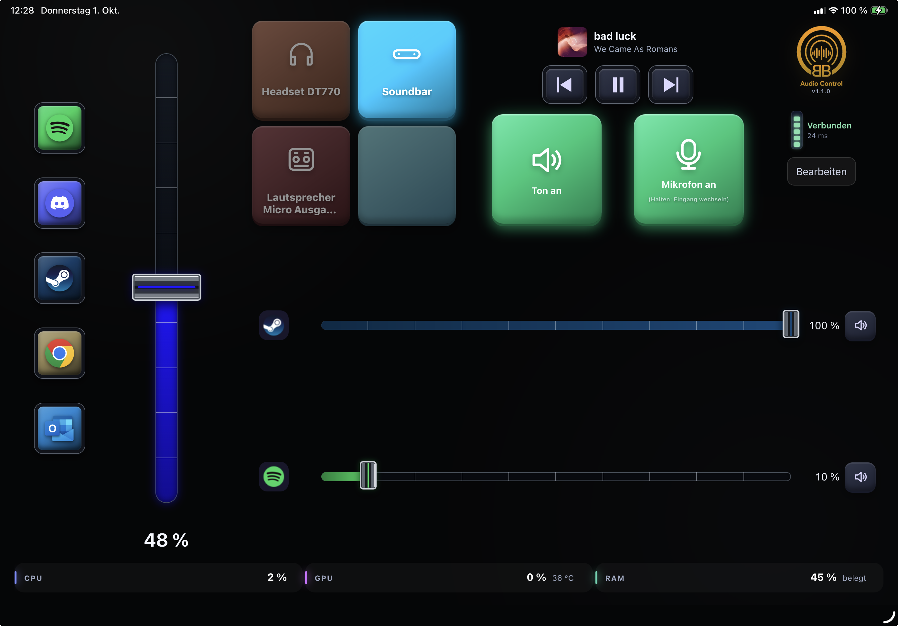
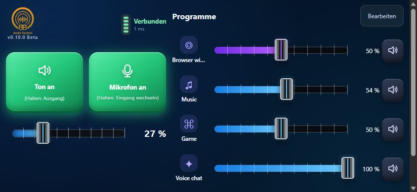
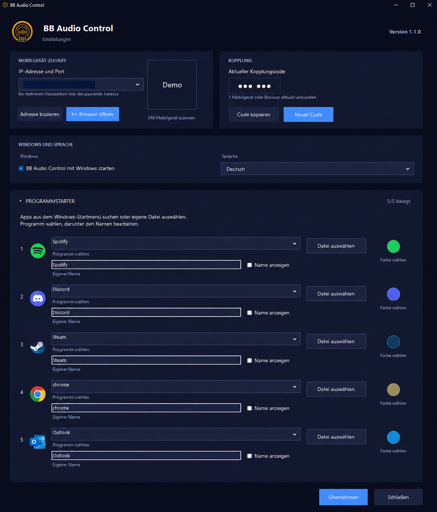

🎚️
Set every app to the right level
Adjust games, Discord, Teams, Spotify or browser volume separately and mute them instantly.
Game too loud, voice chat too quiet, or the browser cutting through? Adjust each application from your tablet or phone—for gaming and everyday Windows use.
Windows 10/11 · x64 · Free · Installer is currently unsigned

Balance game and voice chat during a match, turn Teams down while working from home, or control music and browser audio separately—all from a tablet or phone you already own.
Adjust games, Discord, Teams, Spotify or browser volume separately and mute them instantly.
Avoid Alt-Tab while gaming and skip the Windows volume mixer during everyday use.
Change the default output or route one application to a different device.
One tap controls mute. A long press lets you select another input.
See the current title, pause it or skip—including YouTube in a browser.
Gaming PC or work computer: the interface runs in a browser without specialist hardware.
The tablet becomes your complete control panel. The phone layout keeps the controls that make sense beside your keyboard or on the move.
The complete gaming desk mixer with output tiles, media controls and system information.


Compact access to master volume, microphone and the most important applications in portrait and landscape.


Five keys with Windows icons launch apps or bring existing windows forward. Hold for three seconds to force-quit the associated app, including background apps. Unsaved work may be lost.
Expand Program launchers in the Windows app to search Start menu apps or choose a file. Customize each key’s name, name visibility and background color. Updates retain your assignments.
Launcher keys appear only in the tablet layout from 1107 × 710 CSS pixels. Smaller browser viewports use the phone layout without launcher keys; application volume faders remain available.
Windows can restrict focus changes. Scripts, installers and protocol shortcuts cannot always be matched to a running app.

Use Edit → Appearance → Force tablet view to fit the full tablet interface proportionally into your browser viewport, without a minimum size. The choice is saved only in that browser. With this option off, automatic phone layout still hides launcher keys.
Windows settings also have a refreshed design: no section boxes, rounded controls, a clearer expand arrow and improved spacing.
BB Audio Control checks GitHub at startup and daily. Choose Install now or Later, or use Check for updates in settings. Downloads are verified using SHA-256 before installation. Your pairing PIN, settings and app assignments are retained.
Update checks require internet and contact GitHub. Installation starts only after your approval.
Download and run the current installer on your Windows PC.
Connect the PC and mobile device to the same reachable private network.
Pair with the six-digit code and start controlling your audio.
Control runs directly between the Windows PC and mobile device. A pairing code prevents unwanted control from the network.
BB Audio Control should grow with the needs of its users. If you find a bug or have an idea for an improvement, you can report it directly on GitHub.
Please do not publish pairing codes, local IP addresses, computer names or other personal data.
BB Audio Control 1.2.1 is available free for Windows 10 and 11.
BB Audio Control is an independent project and is not affiliated with Elgato. Stream Deck is a trademark of its respective owner.